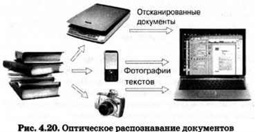

4.5.1. Программы оптического распознавания документов
Кроме текстовых процессоров, предназначенных для создания и обработки текстов на компьютере, существует ряд программ, позволяющих автоматизировать работу человека с текстовой информацией.
Очень часто возникает необходимость ввести в компьютер несколько страниц текста из книги, статью из журнала или газеты и т. д. Конечно, можно затратить определённое время и просто набрать этот текст с помощью клавиатуры. Но чем больше исходный текст, тем больше времени будет затрачено на его ввод в память компьютера.
Судите сами. Предположим, кто-то из ваших одноклассников, освоивших клавиатурный тренажёр, может вводить текстовую информацию со скоростью 150 символов в минуту. Выясним, сколько времени ему понадобится для того, чтобы ввести в память компьютера текст романа А. Дюма «Три мушкетёра». Одно из изданий этого романа выполнено на 590 страницах; каждая страница содержит 48 строк, в каждую строку входит в среднем 53 символа.
Вычислим общее количество символов в романе:
590 • 48 • 53 = 1 500 960 символов.
Вычислим время, необходимое для ввода этого массива символов в память компьютера: 1 500 960 : 150 ? 10 000 мин. А это приблизительно 167 часов.
При этом мы не обсуждаем вопрос о времени на исправление возможных ошибок при таком способе ввода текста, не принимаем в расчёт усталость человека.
Для ввода текстов в память компьютера с бумажных носителей используют сканеры и программы распознавания символов. Одной из наиболее известных программ такого типа является ABBYY FineReader. Упрощённо работу с подобными программами можно представить так:
1. Бумажный носитель помещается под крышку сканера. 2. В программе отдаётся команда Сканировать и распознать. Сначала создаётся цифровая копия исходного документа в формате графического изображения. Затем программа анализирует структуру документа, выделяя на его страницах блоки текста, таблицы, картинки и т. п. Строки разбиваются на слова, а слова — на отдельные буквы. После этого программа сравнивает найденные символы с шаблонными изображениями букв и цифр, хранящимися в её памяти. Программа рассматривает различные варианты разделения строк на слова и слов на символы. В программу встроены словари, обеспечивающие более точный анализ и распознавание, а также проверку распознанного текста. Проанализировав огромное число возможных вариантов, программа принимает окончательное решение и выдает пользователю распознанный текст. 3. Распознанный текст переносится в окно текстового редактора (например, Microsoft Word).
Вместо сканера можно использовать цифровой фотоаппарат или камеру мобильного телефона. Например, при работе с книгами в библиотеке вы можете сфотографировать интересующие вас страницы. Скопировав снимки на компьютер, вы можете запустить ABBYY FineReader, распознать тексты и продолжить работу с ними в текстовом процессоре (рис. 4.20).
4.5.2. Компьютерные словари и программы-переводчики
Возможности современных компьютеров по хранению больших массивов данных и осуществлению в них быстрого поиска положены в основу разработки компьютерных словарей и программ-переводчиков.
В обычном словаре, содержащем несколько сотен страниц, поиск нужного слова является длительным и трудоёмким процессом. Компьютерные словари обеспечивают мгновенный поиск словарных статей. Многие словари предоставляют пользователям возможность прослушивания слов в исполнении носителей языка.
Компьютерные словари (русско-английские и англо-русские, русско-французские, русско-немецкие и др.) могут быть установлены на компьютер как самостоятельные программы, бывают встроены в текстовые процессоры, существуют в on-line-режиме в сети Интернет.
Сервис Яндекс-переводчик (https://translate.yandex.ru/) обеспечивает перевод слов с семи иностранных языков на русский и обратно. Вы можете получить полную информацию о правильном произношении и написании иностранных слов, синонимах и примерах использования.
Компьютерные словари выполняют перевод отдельных слов и словосочетаний. Для перевода текстовых документов применяются программы-переводчики. Они основаны на формальном знании языка — правил словообразования и правил построения предложений. Программа-переводчик сначала анализирует текст на исходном языке, а затем конструирует этот текст на том языке, на который его требуется перевести.
С помощью программ-переводчиков можно успешно переводить техническую документацию, деловую переписку и другие текстовые материалы, написанные «сухим» языком. Перевод художественных текстов, эмоционально окрашенных, богатых гиперболами, метафорами и др., в полной мере может выполнить только человек.
САМОЕ ГЛАВНОЕ
Для ввода текстов в память компьютера с бумажных носителей используют сканеры и программы распознавания символов.
Возможности современных компьютеров по хранению больших массивов информации и осуществлению в них быстрого поиска положены в основу разработки компьютерных словарей и программ-переводчиков. Компьютерные словари выполняют перевод отдельных слов и словосочетаний. Для перевода текстовых документов применяются программы-переводчики.